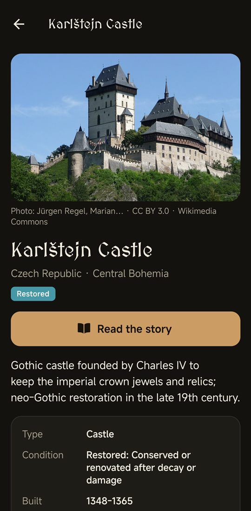
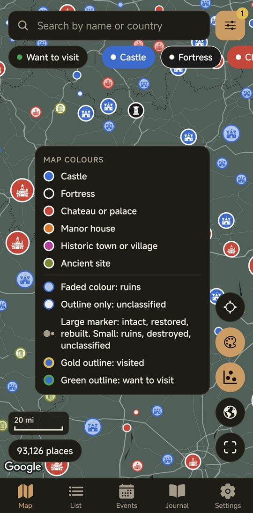
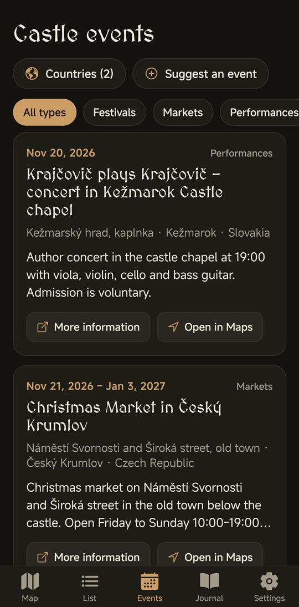
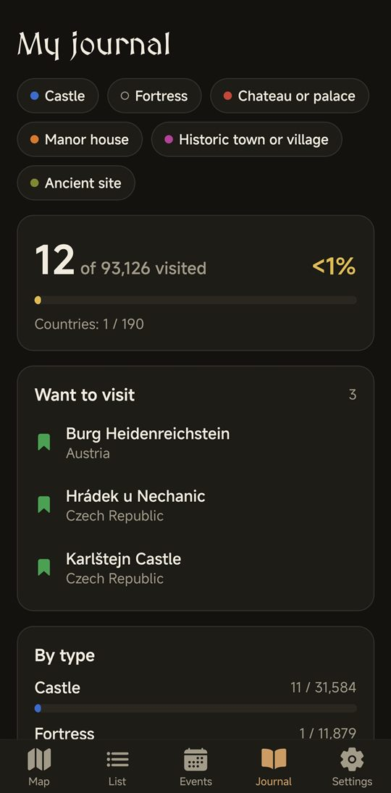

Замки, шато, крепости и археологические памятники на одной карте
Отмечайте посещённые места, читайте их историю и ведите собственный дневник замков. Без рекламы, без учётной записи, без отслеживания.
Приложение для Android. Бесплатно в Google Play.
- 93 000+мест
- 190стран
- 14языков
- 0рекламы и учётных записей
Что умеет Eldoria
Одна карта, шесть типов мест
Замки, крепости, дворцы и шато, усадьбы, исторические города и деревни, археологические памятники. Отфильтровать места можно по типу, стране, состоянию, Всемирному наследию ЮНЕСКО и по посещённым. При открытии на карте показаны замки и крепости; остальные типы можно добавить в фильтрах.
Карта в стиле пергамента
При отдалении места объединяются в круги с числом. При приближении каждое место получает собственный средневековый значок, а там, где тесно, — точку. В переполненных областях первыми отображаются самые читаемые места.
Рядом со мной
Ближайшие места с указанием расстояний и, по желанию, уведомления, пока приложение открыто. Ваше примерное местоположение остаётся на телефоне.
Читать историю
Откройте место и читайте статью о нём из Wikipedia прямо в приложении, на любом из 14 языков, на которых она существует, включая историю и легенды. Фото берутся из Wikimedia Commons с указанием автора.
Ваш дневник замков
Отмечайте посещения с датой, добавляйте оценку в звёздах, заметки и до трёх фото. Добавляйте в закладки места, которые хотите посетить. Смотрите свои посещения по странам и типам. Экспортируйте резервную копию в файл и восстановите её на новом телефоне.
Средневековые события
Список предстоящих ярмарок, турниров и фестивалей в выбранных вами странах со ссылкой на страницу организатора и на место в приложении карт.
Приложение в картинках
Снимки экрана приложения для Android (интерфейс на английском языке).

При приближении каждое место получает собственный значок. Нажмите на место, чтобы увидеть его карточку. 
Место: фото с указанием автора, тип, состояние, возраст и расположение. 
Статья Wikipedia внутри приложения, с историей и легендами. 
Легенда карты: цвет показывает тип, а размер и выцветание — состояние. 
Предстоящие средневековые события. 
Ваш дневник: посещения по типам и странам и места, которые вы хотите посетить. 
Шесть стилей карты, которые переключаются одной кнопкой. 
Спутниковый стиль. При отдалении места объединяются в пронумерованные кружки. 
Отметьте место как посещённое с датой или сохраните его в списке мест, которые хотите посетить. 
При отдалении места объединяются в пронумерованные кружки. Здесь: Европа и Северная Африка. 
Вид издалека: Северная и Южная Америка. 
Замок в Австрии: фото с указанием автора, тип и состояние. 
Замок в Словакии: фото, тип, состояние и возраст.
Как читать карту
Цвет показывает тип места. Форма и размер показывают, что известно о его состоянии.
Крупный сплошной маркер: сохранился, отреставрирован или восстановлен.
Только контур: состояние неизвестно.
Мелкий бледный маркер: руины или уничтожен.
Шесть типов мест
- Замок
- Крепость
- Дворец / шато
- Усадьба
- Исторический город / деревня
- Археологический памятник
Состояние берётся из Wikidata, Wikipedia, Wikimedia Commons и DBpedia. Источник указывает его примерно для 23 % мест; ещё для примерно 11 % оно выведено и помечено как непроверенное. Остальные остаются без классификации.
Предстоящие средневековые события
Тот же список, что приложение показывает на вкладке «События». Он составляется вручную по собственным объявлениям организаторов и пока охватывает лишь несколько стран. Предложить событие можно через «Связь» в приложении.
- Загружаем события…
Откуда берутся данные
Eldoria объединяет общедоступные данные. Сведения о местах могут быть неполными или содержать ошибки.
- Места и названия
- Wikidata (CC0).
- Состояние
- Wikidata, категории и инфобоксы Википедии, категории Wikimedia Commons и данные инфобоксов из DBpedia (CC BY-SA). Если ни один из них его не указывает, часть состояний выведена и помечена как непроверенная; остальные остаются без классификации.
- Какие места показываются первыми
- Просмотры статей Wikipedia об этих местах за 60 дней до сборки данных (Wikimedia pageviews, CC0).
- Статьи
- Wikipedia (CC BY-SA 4.0); в приложении сокращены, со ссылкой на оригинал.
- Фото
- Wikimedia Commons; для каждого фото указаны автор и лицензия.
- Карта
- Google Maps.
- Оформление
- Значки маркеров из набора Fantasy RPG GUI от Artsystack; шрифт заголовков MedievalSharp от wmk69 (SIL Open Font License).
Цифры на этой странице приведены по состоянию на ноябрь 2026 г..
Вопросы и ответы
Бесплатно ли приложение Eldoria?
Да. Рекламы, покупок и учётной записи нет.
На каких устройствах работает приложение?
На Android. Приложение доступно в Google Play. Версии для iPhone нет.
Работает ли приложение без интернета?
Для карты, статей и фото нужно подключение. Ваши посещения, оценки, заметки и фото хранятся на телефоне, а последний загруженный список событий сохраняется для просмотра без подключения.
Где хранятся мои посещения и отзывы?
Только на вашем телефоне. Разработчик их никогда не получает. Вы можете экспортировать резервную копию в файл и восстановить её на другом телефоне.
Используется ли моё местоположение?
Только если вы откроете «Рядом со мной» и дадите разрешение, и только примерное местоположение. Оно считывается на телефоне, пока приложение открыто, чтобы отсортировать места по расстоянию; приложение его не сохраняет и не отправляет. Подробности: Политика конфиденциальности.
Почему у многих мест состояние «Не классифицирован»?
Сохранилось ли место, восстановлено, отстроено заново или лежит в руинах, общедоступные источники указывают лишь примерно для 23 % мест. Для части остальных Eldoria выводит состояние (например, по типу объекта) и помечает его как непроверенное; если и это невозможно, место остаётся без классификации.
Место указано неверно или отсутствует. Что делать?
В приложении откройте «Настройки» > «Связь» или напишите на mythicforgeinteractive@gmail.com. Данные берутся из Wikidata, поэтому внесённые там исправления попадают в приложение при последующем обновлении данных.
Можно ли предложить событие?
Да, через ту же форму «Связь». События добавляются вручную на основании собственных объявлений организаторов.